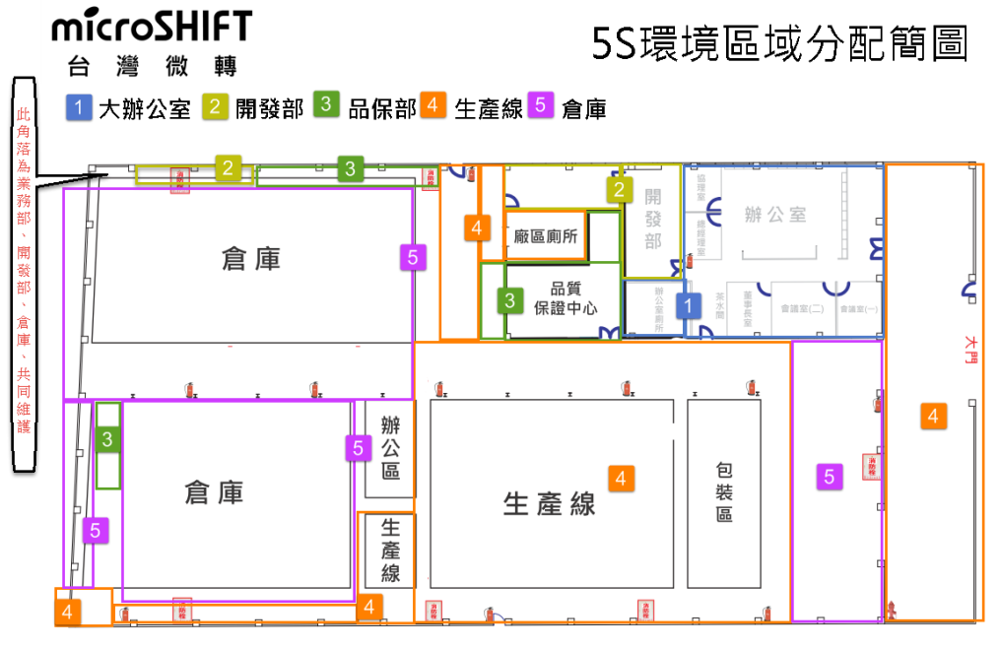
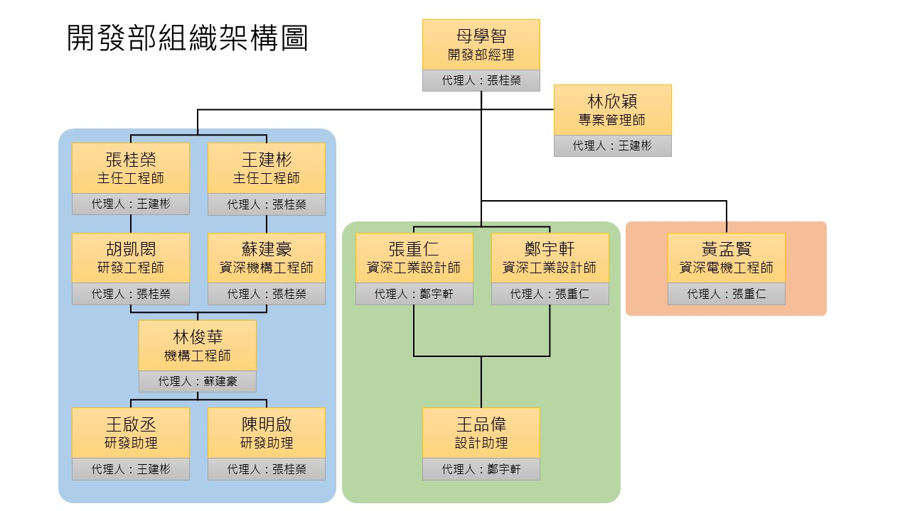

Q1.公司的位置圖/區域圖在哪?
公司平面圖/區域圖可以參考5S分區圖。

Q2.遇到地震該到哪裡避難?
請往公司停車場移動集合。
Q3.公司的各種警示顏色代表什麼?
■ #F05C45：警示、不良、錯誤、緊急、延遲
■ #F09A20：風險、注意、進行中、近期、即期、變動
■ #76B12B：目標、優質、正常、完成、提前
■ #0000FF：重點、暫停
■ #000000：文字、穩定、常態、長期、穩固
Q4.開發部的組織架構為何? 我的工作代理人是誰?
請參考開發部組織架構圖

Q5.公司各部門的KPI與達成率為何?
Q6.開發部的KPI是什麼?
是什麼 怎麼算 與其他部門的關聯
每X更新一次，每年審視一次
警戒線
Q7.開發入口網頁上有哪些表單?
| 項次 |
名稱 |
說明 |
更新頻率 |
| 1 |
開發月會進度表 |
開發月會時討論之內容與紀錄 |
每月更新 |
| 2 |
開發部專案進度 |
開發個專案之進度追蹤 |
每週更新 |
| 3 |
新開模零件追蹤表 |
各專案需求之開模零件追蹤 |
每週更新 |
| 4 |
CNC打樣治具排程表 |
與CNC部門協調需求之排程表 |
即時更新 |
| 5 |
開發部待設變項目表 |
與生管部門協調設變項目之清單 |
每週更新 |
| 6 |
開發部問題改善檢討與計畫 |
日常問題討論與追蹤 |
每週更新 |
| 7 |
microShift全球專利商標總表 |
公司各項專利與商標清單 |
即時更新 |
| 8 |
開發討論區 |
開發內部的teams的討論區 |
即時更新 |
Q8.如果我遇到(發現)問題可以怎麼辦?
1.可依據部門組織架構圖向上呈報詢問
2.可利用teams中的「開發討論區」提出問題，問題會在
開發部問題改善檢討與計畫
中記錄並追蹤
3.公司有「問題蒐集」線上表單可直接填寫，且會有
追蹤清單
可確認處理進
Q9.開發週會的執行事項有哪些?
1.布達公司公告、活動或消息
2.工作狀況或其他問題討論
3.若討論出結論會在teams「開發公告區」發布
Q10.開發月會的執行事項有哪些?
1.追蹤各專案工作進度
2.工作或專案相關議題討論
3.將討論事項紀錄於「開發月會進度表」的每月備註欄位
Q11.工作/開發流程可參考什麼?
請依循公司共用資料夾(n2)>02_ISO文件>開發部 管理辦法>1.產品開發管理辦法
內部包含工作與開發準則。
若有執行上遇到問題或改善提案請參考「Q7.如果我遇到(發現)問題可以怎麼辦?」
Q12.專案管理內容有哪些?
專案管理師將每週追蹤個專案進度與排成，若有發現進度異常(落後)，則會提出並與產品負責人及相關主管討論，擬定後續改善措施或調整執行方式。
Q13.當遇到問題可以用什麼方式處理?
可參考以下「8D」的問題處理方式(實際實施方式可參考線上表單「開發部問題改善檢討與計畫」)。
D1：選定主題與建立團隊
D2：描述問題與掌握現狀
D3：列出、選定與驗證暫時防堵措施
D4：列出、選定及驗證真因
D5：列出、選定及驗證永久對策
D6：執行永久對策及確認效果
D7：預防再發及標準化
D8：反省、恭賀團隊及規劃未來方向
Q14.如何善用「開發討論區」與「開發公告區」?
1.當遇到問題或需要部門人員共同討論之議題時，可以到teams的「開發討論區」中提出議題，並與相關人員討論。
2.當有需布達之事項，或與部門同仁討論議題有結論時，可以到teams的「開發公告區」中將其清楚敘述，通知部門同仁。